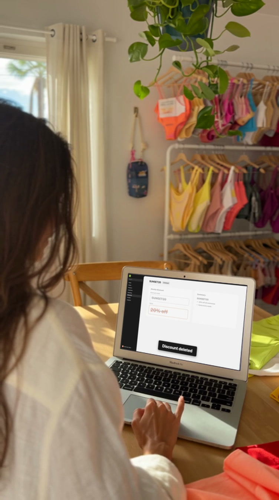
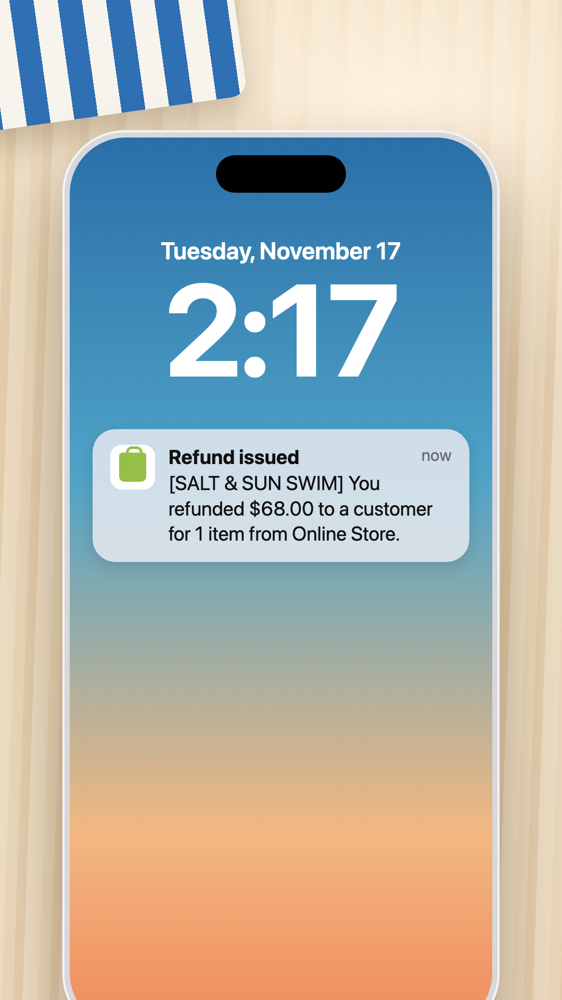
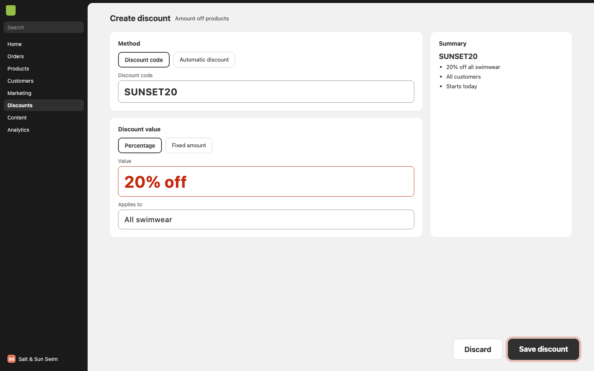
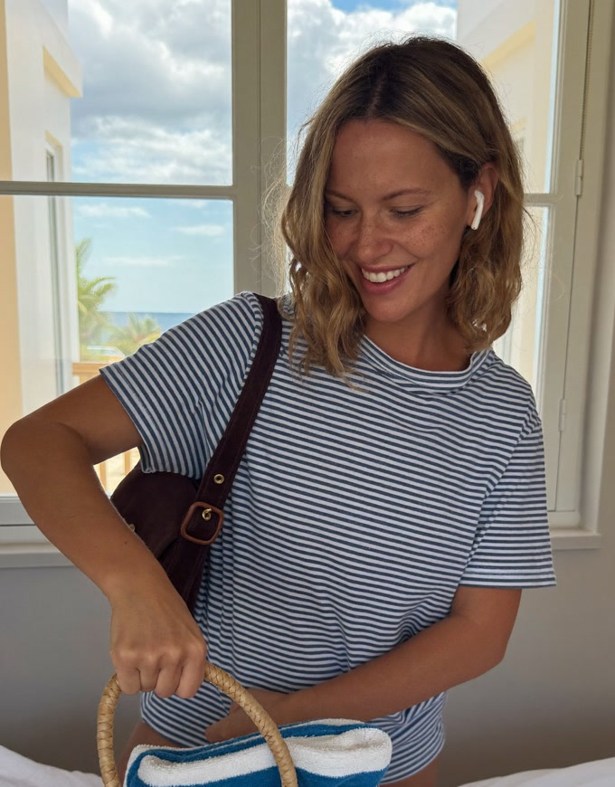
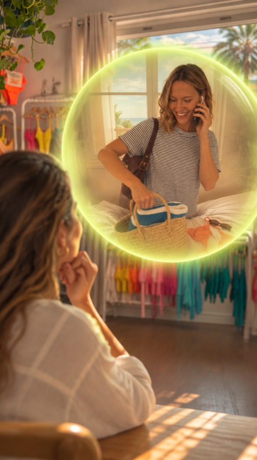
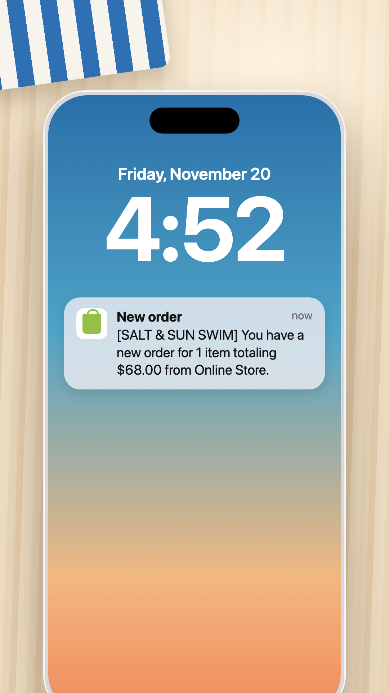
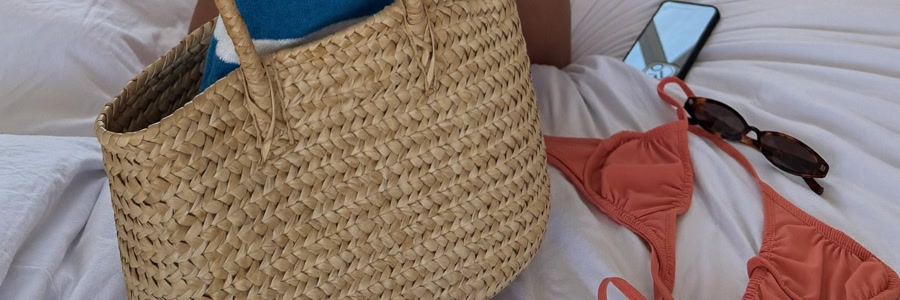

"The Refund": a bikini-store owner hears the ka-ching, but it's a refund. She reaches for a discount, Scout freezes the moment and plays her the shopper call that changes her mind. Then the full-price ka-ching. We make it in two simple Seedance passes so each one does one job well.
8-10 s, the aha: {I'm training them to wait.} with a half laugh → a shocked realisation, hand to forehead, no smile: {Oh my god... I'm training them to wait.}
10-13 s, the delete: {Noted.} finger presses Discard, side angle → hard cut, seen from behind her at the laptop; her hand on the trackpad clicks Delete; the list of weekly discounts empties and a dark "Discount deleted" toast pops up. She says: {You know what? Let's delete all these discounts.}
Reference for that beat: Image 6 (one role: framing from behind, hand on the trackpad, the toast).

Pass 2 grows to 17 s for the longer lines (trim 1 s of pass 1's silent hold in the edit to stay at 30 s). All upload cards, Image 1 to 6, are under Reference assets; the "Create discount" screen is Image 3. Full check: SD25-CHECK.md.
H222 · Script card · pass 1 rendered on Emile's go (42 cr); nothing else paid
Emile asked: "can we run the skill test on it and maybe launch the first pass? Let's try." Pass 1 went out with the prompt compiled by ByteDance's real sd25-pe skill (pass1-sd25pe-skill.txt, 625 words): 14 s draft, 42 credits, job 3c54f2b9. His verdict: "it is good, this is good."
pass1-kaching-fixed.mp4 (below, 14.0 s). A redo would cost 42 cr and needs Emile's go; nobody has asked for one. Both prompts now carry his rule (the pass 1 prompt for any retake, the pass 2 prompt for the next render).Nov 15 sd25-pe check (for the next take; both passes are already rendered). Pass 2 now carries Emile's Nov 15 refund rules: the aha is a shocked {Oh my god... I'm training them to wait.} (hand to forehead, no smile, no half laugh); the decision line is {You know what? Let's delete all these discounts.}, not "Noted."; the delete is a hard cut from behind her at the laptop, her hand clicking Delete on the trackpad, with a dark "Discount deleted" toast (no finger on a screen). The small second orb inside the memory is gone (Scout is a voice in her earbud), and the boundary now says she and the orb are still. The longer lines need one more second: pass 2 is now 17 s (0-17s); trim 1 s of pass 1's silent 13-14 s hold in the edit to keep the ad at 30 s. The kraft mailer is dropped from the 1 s order beat. Pass 1: Image 2 is now the room only and Scout has his own Image 6; the other images keep the last frame in Image 5. Full check: SD25-CHECK.md.
One pass 2 prompt now: pass2-sd25pe-skill.txt (1,033 words after the Nov 15 sd25-pe check; prompt-sd25pe-final.txt holds the same bytes). Every uploaded asset now has exactly one role: Video 2 is the end card only, Image 1 is the shopper only (a portrait crop), Image 5 is her bedroom only (a separate crop), Audio 4 is Scout's voice only (its own clip). It follows Emile's memory-orb ask from H229 ("the orb takes you back... you kind of know this was the past"): the orb swells into a glowing sphere, the camera pushes into the shopper call as a past moment, then pulls back out to the owner. It was compiled with the real sd25-pe skill, then hand-fixed for his ka-ching rule. All 7 lines are word for word the same as before (checked by script). The earlier flip version is kept below, folded, only for comparison; do not send it.
【Reference Asset Roles】
@Video1 is the source video to extend forward.
@Video2 is used only for the closing end card: from 14s only, reproduce its picture, the Scout wordmark whose "o" is the glowing lime orb, the text and the lime button. Do not use it before 14s, and do not use its sound.
The shopper maps to @Image1; use only her face, light-brown hair, striped T-shirt and white earbud.
The memory sphere references @Image2; use only the look of a swollen glowing lime sphere with a past moment playing inside it, as if through round glass. Do not use its people, its composition or its shoulder bag; the woman inside the sphere is the shopper from @Image1.
The shopper's bedroom references @Image5; use only the white bed, the woven straw beach bag with its blue towel, and the coral bikini, phone and sunglasses on the bed. A bright window with palm trees and the sea is behind her bed.
The laptop screen at the start references @Image3; show the "Create discount" page exactly as written, only until the hard cut at 10s.
The full-price new-order notification references @Image4; show its lock-screen text exactly as written.
The delete shot at 10-13s references @Image6; use only its camera position behind her over her shoulder, her hand on the laptop trackpad and the dark "Discount deleted" toast at the bottom of the screen. Do not use the page text behind the toast.
@Audio1 is used only for the owner's voice timbre, accent, pace and emotion; the words come only from this prompt.
@Audio2 is used only for the shopper's voice timbre, accent, pace and emotion; the words come only from this prompt.
@Audio3 is the ka-ching for the full-price order; use it only once, at 13-14s, as the @Image4 notification lands on her phone, and never on the orb, the sphere or any other shot.
@Audio4 is used only for Scout's voice timbre, accent, pace and emotion; the words come only from this prompt.
【Extension】
Extend @Video1 forward. The first frame of the extended segment directly continues from the final frame of @Video1: keep the owner seated on her wooden chair at the table, hands on the laptop, the @Image3 page open on the screen, her head turned toward Scout, the single lime orb floating in the air in front of the bikini rail, her lips closed, her turn toward the orb just finished so she and the orb are both still, the window with palm trees behind her, the camera position, the bright daylight and the quiet room sound. The other reference assets must not replace this boundary frame.
Then Scout takes her back into a call with one of her shoppers, shown as a past moment inside the orb, the owner realises why her sales stalled, deletes all her weekly discounts, and a full-price order lands.
【Event Script】
0-2s: Medium close-up, the camera slowly pushes toward the orb as it swells, silently, into a large glowing lime sphere in front of her, like a memory bubble. Inside the sphere, as if through round glass, the shopper's sunny bedroom from @Image5 appears. Scout, off-screen, in natural English, warm, says: {Listen.} The owner watches with her mouth closed.
2-5s: The camera pushes through the sphere's surface into the memory. Close-up over the shopper's shoulder: the edges of the frame glow soft lime and the picture is slightly warmer and dreamlike, clearly a past moment. Her phone shows a shopping cart with a coral bikini named "Sunset". Scout is not in the memory; his voice comes through her earbud. Scout, off-screen, in natural English, curious and friendly, says: {You left the Sunset bikini three times. What stopped you?} The shopper keeps her mouth closed while Scout speaks.
5-8s: Inside the memory, medium close-up, eye level, slow push in. The shopper, earbud in, laughs over the beach bag she is packing on her bed. The shopper, in natural English, casual and laughing a little, says: {You run a discount every week. I'm just waiting for it.}
8-10s: The camera pulls back out through the sphere into the owner's studio; the sphere silently shrinks back into the small orb in front of the bikini rail. The pull-back lands on a close-up of the owner holding a coral bikini, already motionless: she stops dead, eyes wide, her free hand pressed to her forehead. No smile. She speaks the moment the camera settles, a quick catch of breath on the "...". The owner, in natural English, stunned, a genuine shock of realisation, says: {Oh my god... I'm training them to wait.}
10-13s (reference: @Image6): Hard cut, seen from behind her at the laptop, over her shoulder: her Shopify admin now shows her list of weekly discounts, all ticked. The owner, in natural English, decided and firm, says: {You know what? Let's delete all these discounts.} Her hand on the trackpad clicks Delete, the list empties, and a dark toast reading "Discount deleted" pops up at the bottom of the screen.
13-14s: Extreme close-up, overhead, locked-off, on her phone alone, with no orb in the shot: the phone on the table lights up with the @Image4 notification <the @Audio3 ka-ching as the @Image4 notification lands>. The owner, off-screen, in natural English, relieved and smiling, says right after the sound: {Glad I asked.}
14-17s: The silent orb drifts to the centre of the frame and becomes the "o" of the Scout wordmark, arriving at the end card of @Video2. Scout, in natural English, says: {Scout interviews your shoppers for you. Get free early access.} The owner keeps her mouth closed.
【Maintain Consistency】
Keep the owner's face, hair and white linen shirt, her one studio with her swimwear always around her, the bright daylight and the warm sand, coral and sea-blue colours from @Video1, and the close handheld-steady framing. The owner, the shopper and Scout each remain one continuous instance, never duplicated, split or swapped; there is only one lime orb, and the owner and the shopper are two different women. The orb and the sphere make no sound at all: no chime, no ka-ching, no pop. The only ka-ching is @Audio3 on the phone at 13-14s. Exactly three voices: the owner's, the shopper's and Scout's, which keeps the @Audio4 voice throughout. Generate dialogue strictly as written; do not add or remove lines. Every line finishes inside its own shot, with no pause longer than half a second inside a line. No background music. No subtitles appear on screen.
【Reference Asset Roles】
@Video1 is the source video to extend forward.
@Video2 is the closing end card: from 12s, reproduce its picture (the Scout wordmark whose "o" is the glowing lime orb, the text and the lime button) and use only Scout's voice timbre from it; the words come only from this prompt. Do not use it before 12s.
The shopper maps to @Image1; use only her face, light-brown hair, striped T-shirt and white earbud.
The shopper's bedroom references @Image1; use only the bed, the woven straw beach bag, the coral bikini on the bed and the bright window.
The laptop screen references @Image2; show the "Create discount" page exactly as written, with its Discard and Save discount buttons.
The new-order notification references @Image3; show its lock-screen text exactly as written.
@Audio1 is used only for the owner's voice timbre, accent, pace and emotion; the words come only from this prompt.
@Audio2 is used only for the shopper's voice timbre, accent, pace and emotion; the words come only from this prompt.
@Audio3 is the new-order sound; use it as is.
【Extension】
Extend @Video1 forward. The first frame of the extended segment directly continues from the final frame of @Video1: keep the owner seated on her wooden chair at the table, hands on the laptop, the @Image2 page open on the screen, her head turned toward Scout, the single lime orb floating in the air in front of the bikini rail, her lips closed, the window with palm trees behind her, the camera position, the bright daylight and the quiet room sound. The other reference assets must not replace this boundary frame.
Then Scout takes us into a call with one of her shoppers, the owner learns why her sales stalled, discards the discount, and a full-price order lands.
【Event Script】
0-1s: Continue from the final frame of @Video1 in one unbroken move: the camera rises above the owner and flips overhead, and on the other side of the flip reveals the shopper's bedroom. Scout, off-screen, in natural English, warm, says: {Listen.}
1-4s: Close-up, over the shopper's shoulder: her phone shows a shopping cart with a coral bikini named "Sunset"; the lime orb hovers beside the phone. Scout, in natural English, curious and friendly, says: {You left the Sunset bikini three times. What stopped you?} The shopper listens with her mouth closed.
4-7s: Medium close-up, eye level, slow push in. The shopper, earbud in, laughs over the beach bag she is packing on her bed. The shopper, in natural English, casual, laughing a little, says: {You run a discount every week. I'm just waiting for it.}
7-9s: Hard cut back to the studio. Close-up, front angle, slow push in. The owner holds a coral bikini; mixed feelings, a half laugh, not angry. The owner, in natural English, realising and quiet, says: {I'm training them to wait.}
9-10s: Extreme close-up, side angle: her finger presses Discard on the laptop showing @Image2. The owner, off-screen, in natural English, dry and decided, says: {Noted.}
10-12s: Extreme close-up, overhead, locked-off: her phone on the table lights up with @Image3, landing with <the @Audio3 new-order sound>, then pull back to her smiling as she folds a bikini into a kraft mailer. On the sound, the owner, in natural English, relieved and smiling, says: {Glad I asked.}
12-16s: The orb drifts from her shoulder to the centre of the frame and becomes the "o" of the Scout wordmark, arriving at the end card of @Video2. Scout, in natural English, says: {Scout interviews your shoppers for you. Get free early access.}
【Maintain Consistency】
Keep the owner's face, hair and white linen shirt, her one studio with her swimwear always around her, the bright daylight and the warm sand, coral and sea-blue colours from @Video1, and the close handheld-steady framing. The owner, the shopper and Scout each remain one continuous instance, never duplicated, split or swapped; there is only one lime orb, and the owner and the shopper are two different women. Exactly three voices: the owner's, the shopper's and Scout's, which stays the same voice as in @Video1 and @Video2. Generate dialogue strictly as written; do not add or remove lines. Every line finishes inside its own shot, with no pause longer than half a second inside a line. No background music. No subtitles appear on screen.Settings, kept out of the prompt: seedance_2_5 · video_extension · extension_mode forward · 16 s · draft 480p · audio on · the ratio is locked to pass 1's 9:16. Upload order: Video 1 = pass 1, job 3c54f2b9, in its ka-ching-fixed cut pass1-kaching-fixed.mp4 (14.0 s) · Video 2 h158-end.mp4 (4.5 s, end card only) · Image 1 shopper-portrait.jpg (new upload, the shopper only) · Image 2 memory sphere (orb-window.png) · Image 3 discount page · Image 4 full-price order banner · Image 5 shopper-bedroom.jpg (new upload, the bedroom only) · Audio 1 Elena, cut to 11.0 s (voice-elena-11s.mp3, new upload) · Audio 2 Serene (11.4 s) · Audio 3 ka-ching (2.6 s) · Audio 4 scout-voice.mp3 (4.5 s, the H158 end-screen sound on its own, new upload). Limits: videos total 18.5 s and audio totals 29.5 s, both within the 30 s cap. Each clip is 2 s or longer. One role per asset: every uploaded asset appears in exactly one role line, so there is no 【Unused Assets】 block. Not uploaded for pass 2 (unused here): the full shopper.jpg, owner.jpg, studio-orb.jpg, refund-banner.png, seam-frame-v1/v2/v3.jpg, the full-length voice-elena.mp3 and the three preset clips.
The final, pass2-sd25pe-skill.txt. It is the memory orb Emile asked for, it carries his ka-ching rule, and it keeps every line from the version he saw. At 925 words it runs longer than ByteDance's own 30 s examples (380-740 words); the extra words are the asset fences and the no-orb-sound lines that his H229 note asked for, so I'd keep them.
omni_reference_task_type: referenceomni_reference_task_type: extend · ratio adaptive · trigger word "Continue from"What can show: a jump in colour or brightness, a volume step (the guide warns "the volume of the generated video may differ slightly from the input video"), music that restarts, or her face drifting after the join.
How we hide it:
end_image role? The API says first/last-frame roles cannot be mixed with omni references, and pass 1 needs the owner, studio, banner, Scout's voice and her voice file. The soft last frame is the price of keeping those refs.return_last_frame, or ffmpeg on the output) and compare it with Image 5: discount page on the laptop, lips closed, eyes on the orb. If it drifts, redo pass 1 (42 cr) before spending pass 2.





Laid out in the guide's four parts (Basic prompting techniques: Asset Referencing → One-Sentence Summary → Detailed Plot → Additional Notes). Dialogue as Character (emotion) says: {line}. Integer-second timestamps with no gaps. Negative wording only for music and subtitles.
Superseded draft. The layout below is our pre-sd25-pe draft (pass1.txt, which still wrote "Vertical 9:16" in the prompt, and pass2.txt). Do not send it. The button copies the prompts that were sent and are recommended: pass1-sd25pe-skill.txt + prompt-sd25pe-final.txt.
Image 1 is the owner of Salt & Sun Swim, a small online bikini store on Shopify. Her voice is Audio 1: take only its timbre, accent, pace and emotion.
Image 2 is her studio and Scout, the lime orb. Every shot of her takes place in this studio, with bikini rails, folded swimsuits and kraft boxes around her. Do not reuse its empty-chair composition.
Image 3 is her phone's lock screen with the refund notification: show it exactly, word for word.
Image 4 is the Shopify discount page on her laptop screen: show it exactly.
Image 5 is the last frame of this video.
Video 1: take only Scout's voice from it. Do not show any of its visuals.
Audio 2 is the ka-ching on the refund notification: use it only at 0-2s, never on the orb or any later shot.
A bikini-store owner in her sunny home studio gets a refund instead of a sale, decides to run a discount, and is stopped mid-click by Scout, a floating lime orb; a light, real, slightly playful live-action ad, vertical, close handheld-steady shots.
0-2s: Macro close-up, overhead, locked-off. Her phone lies face up on the table among folded bikinis. The notification from Image 3 slides in with the 0-2s-only ka-ching of Audio 2.
2-4s: Medium close-up, eye level. She picks up the phone, reads it, and her face drops. The owner (annoyed, then deflated) says: {Oh f... a refund.} She bites the word off after the "f" and never says the rest of it.
4-6s: Close-up, front angle, slow push in. She lowers the phone and looks straight into the camera, a bikini rail behind her. The owner (flat, a little disappointed) says: {Sales are so low this week.}
6-9s: Medium shot from behind her right shoulder, slow push in toward the laptop showing Image 4. She types the discount, pushing a coral bikini aside with her other hand, her lips closed. The owner (V.O., inner voice, close and quiet) says: {Maybe it's time for a discount.} The room sound drops away while she thinks.
9-10s: Extreme close-up, side angle, bullet time: her finger freezes just above the Save discount button on Image 4, a bikini she tossed hangs still in mid-air, and the camera slowly arcs around her hand. One soft whoosh.
10-12s: Medium close-up, eye level, time still frozen. Scout, the lime orb from Image 2, silently appears in the air beside her left shoulder. Scout (warm, quick, a little playful) says: {Not yet. There's something you don't know.}
12-13s: Reverse angle matching Image 5. Time unfreezes; she turns her head to the orb, which glows brighter in silence. The owner (surprised, soft) says: {Hm?}
13-14s: Hold on Image 5: her lips closed, eyes on the orb, Image 4 still open on the laptop, only quiet room sound. End exactly on Image 5.
Vertical 9:16, live action, bright natural daylight from the window, warm sand, coral and sea-blue colours; she is always surrounded by her swimwear. Exactly two voices: hers (Audio 1) and Scout's (Video 1). Generate dialogue strictly as written; do not add or remove lines. Every line finishes inside its own shot, with no pause longer than half a second inside a line. No background music. No subtitles.
Video 1 is the first part of this film: continue from the final frame of Video 1. Keep its owner, studio, daylight, colours, room sound and Scout's voice.
Video 2 is the ending: reproduce it as the final shot, with its voice.
Image 1 is the shopper, at home in her bedroom. Her voice is Audio 2: take only its timbre, accent, pace and emotion. The owner's voice is Audio 1.
Image 2 is the Shopify discount page on the owner's laptop, the same page as in Video 1. Image 3 is her phone's lock screen with the new order: show it exactly, word for word.
Audio 3 is the ka-ching for the full-price order: use it only on the order banner, never on the orb.
Continue the story: Scout, the lime orb, takes us into a call with one of her shoppers, the owner learns why her sales stalled, discards the discount, and a full-price order lands.
0-1s: Continue from the final frame of Video 1 in one unbroken move: the camera rises above the owner and flips overhead, and on the other side of the flip reveals the shopper's bedroom from Image 1. Scout (V.O., warm) says: {Listen.}
1-4s: Close-up, over the shopper's shoulder: her phone shows a shopping cart with a coral bikini named "Sunset"; the lime orb hovers beside the phone. Scout (curious, friendly) says: {You left the Sunset bikini three times. What stopped you?}
4-7s: Medium close-up, eye level, slow push in. The shopper, earbuds in, laughs over the beach bag she is packing on her bed. The shopper (casual, laughing a little) says: {You run a discount every week. I'm just waiting for it.}
7-9s: Hard cut back to the studio. Close-up, front angle, slow push in. The owner holds a coral bikini; mixed feelings, a half laugh, not angry. The owner (realising, quiet) says: {I'm training them to wait.}
9-10s: Extreme close-up, side angle: her finger presses Discard on the laptop showing Image 2. The owner (dry, decided) says: {Noted.}
10-12s: Extreme close-up, overhead, locked-off: her phone on the table lights up with Image 3, landing with the sound of Audio 3, then pull back to her smiling as she folds a bikini into a kraft mailer. The owner (relieved, smiling) says on the bell: {Glad I asked.}
12-16s: The orb drifts from her shoulder to the centre of the frame and becomes the "o" of the Scout wordmark, exactly as in Video 2. Scout says: {Scout interviews your shoppers for you. Get free early access.}
Same bright daylight, warm sand, coral and sea-blue colours and close handheld-steady framing as Video 1; the owner is always surrounded by her swimwear. Exactly three voices: the owner (Audio 1), the shopper (Audio 2) and Scout (Video 1 and Video 2). Generate dialogue strictly as written; do not add or remove lines. No background music. No subtitles.
Spoken words: 56 before the end line (The Dip had 55), 65 including "Scout interviews your shoppers for you. Get free early access." No owner or shopper line shares a shot with another line, except "Glad I asked" on the bell.
Both passes run through ByteDance's prompt optimizer sd25-pe (round 1, its rules applied by hand; superseded: pass 1 was then re-compiled by the real skill and rendered, and pass 2's final real-skill compile is in Where it stands), then checked against The Dip (H174). Same technique, same assets, same upload order, same 12 lines word for word. Pass 1 goes from 533 to 765 words, pass 2 from 477 to 694.
Generate a light, real, slightly playful live-action ad: a bikini-store owner in her sunny home studio gets a refund instead of a sale, decides to run a discount, and is stopped mid-click by Scout, a floating lime orb. Please note that this is not video editing.
Image 1 is used for the owner's face, long brown hair and white linen shirt. She is the owner of Salt & Sun Swim, a small online bikini store on Shopify.
Image 2 is used for her studio: the bikini rails, folded swimsuits, kraft boxes, wooden table, the window with palm trees and the bright daylight. Do not reuse its empty-chair composition.
Image 2 is also used for Scout's look: one glowing lime orb with a white sound-wave mark. Scout is not in the room before 10s.
Image 3 is used for her phone's lock screen with the refund notification: show it exactly, word for word.
Image 4 is used for the Shopify discount page on her laptop screen: show it exactly.
Use Image 5 as the last frame.
This last frame defines the owner seated at her laptop with Image 4 open, her head turned toward Scout floating in the air beside her, her lips closed, the bikini rails and the window behind her.
Video 1 is used only for Scout's voice. Do not show any of its visuals, text or graphics.
Audio 1 is used for the owner's voice: take only its timbre, accent, pace and emotion; she says only the lines written below.
Audio 2 is the ka-ching on the refund notification: use it only at 0-2s, never on the orb or any later shot.
The owner maps to Image 1 and is the only person in this video. Every shot of her takes place in the studio from Image 2, with bikini rails, folded swimsuits and kraft boxes around her. Her phone and her laptop showing Image 4 sit on the same wooden table. Scout is one lime orb that floats in the air near her.
0-2s: Macro close-up, overhead, locked-off. Her phone lies face up on the table among folded bikinis. The notification from Image 3 slides in with <the ka-ching, only at 0-2s, of Audio 2>.
2-4s: Medium close-up, eye level. She picks up the phone, reads it, and her face drops. In English, annoyed, then deflated, the owner says: {Oh f... a refund.} She bites the word off after the "f" and never says the rest of it.
4-6s: Close-up, front angle, slow push in. She lowers the phone and looks straight into the camera, a bikini rail behind her. In English, flat, a little disappointed, the owner says: {Sales are so low this week.}
6-9s: Medium shot from behind her right shoulder, slow push in toward the laptop showing Image 4. She types the discount, pushing a coral bikini aside with her other hand, her lips closed. In English, as her inner voice off-screen, close and quiet, the owner says: {Maybe it's time for a discount.} The room sound drops away while she thinks.
9-10s: Extreme close-up, side angle, bullet time: time freezes, her finger stops just above the Save discount button on Image 4, a bikini she tossed hangs still in mid-air, and the camera slowly arcs around her hand while nothing else moves. <One soft whoosh.>
10-12s: Medium close-up, eye level, time still frozen. Scout, the lime orb from Image 2, silently appears in the air beside her left shoulder. In English, warm, quick, a little playful, Scout says: {Not yet. There's something you don't know.} The owner stays frozen with her lips closed.
12-13s: Reverse angle matching Image 5. Time unfreezes; she turns her head to the orb, which glows brighter in silence. In English, surprised, soft, the owner says: {Hm?}
13-14s: Hold on Image 5: her lips closed, eyes on the orb, Image 4 still open on the laptop, only quiet room sound. End exactly on Image 5.
Live action, close handheld-steady shots, bright natural daylight from the window, warm sand, coral and sea-blue colours; she is always surrounded by her swimwear. Keep the owner's face, hair and white linen shirt, the one studio from Image 2, one phone, one laptop and one orb. The owner and Scout each remain one continuous instance, never duplicated or split. Exactly two voices: hers (Audio 1) and Scout's (Video 1). Generate dialogue strictly as written; do not add or remove lines. Every line finishes inside its own shot, with no pause longer than half a second inside a line. No background music. No subtitles on screen.
Video 1 is the source video to extend forward. It is the first part of this film: keep its owner, studio, daylight, colours, room sound and Scout's voice.
Video 2 is used only for the final shot: the lime orb becoming the "o" of the Scout wordmark, and Scout's voice. Do not show any of its visuals before 12s.
Image 1 is used for the shopper's face, wavy shoulder-length hair, striped T-shirt and white earbuds, and for her bedroom at home. She is a different woman from the owner.
Image 2 is used for the Shopify discount page on the owner's laptop, the same page as in Video 1: show it exactly.
Image 3 is used for the owner's phone lock screen with the new order: show it exactly, word for word.
Audio 1 is used for the owner's voice: take only its timbre, accent, pace and emotion.
Audio 2 is used for the shopper's voice: take only its timbre, accent, pace and emotion.
Audio 3 is the ka-ching for the full-price order: use it only on the order banner, never on the orb.
Scout's voice comes from Video 1 and Video 2.
Extend Video 1 forward. The first frame of the extended segment directly continues from the final frame of Video 1: keep the owner seated at her laptop with the discount page open, her head turned toward Scout, the lime orb floating beside her, her lips closed, the bikini rails and the window behind her, the camera position, the bright daylight and the quiet room sound. The other reference assets must not replace this boundary frame.
Then Scout, the lime orb, takes us into a call with one of her shoppers, the owner learns why her sales stalled, discards the discount, and a full-price order lands.
0-1s: Continue from the final frame of Video 1 in one unbroken move: the camera rises above the owner and flips overhead, and on the other side of the flip reveals the shopper's bedroom from Image 1. Off-screen, in English, warm, Scout says: {Listen.}
1-4s: Close-up, over the shopper's shoulder: her phone shows a shopping cart with a coral bikini named "Sunset"; the lime orb hovers beside the phone. In English, curious, friendly, Scout says: {You left the Sunset bikini three times. What stopped you?} The shopper listens with her lips closed.
4-7s: Medium close-up, eye level, slow push in. The shopper, earbuds in, laughs over the beach bag she is packing on her bed. In English, casual, laughing a little, the shopper says: {You run a discount every week. I'm just waiting for it.}
7-9s: Hard cut back to the studio. Close-up, front angle, slow push in. The owner holds a coral bikini; mixed feelings, a half laugh, not angry. In English, realising, quiet, the owner says: {I'm training them to wait.}
9-10s: Extreme close-up, side angle: her finger presses Discard on the laptop showing Image 2. In English, dry, decided, the owner says: {Noted.}
10-12s: Extreme close-up, overhead, locked-off: her phone on the table lights up with Image 3, landing with <the order sound of Audio 3>, then pull back to her smiling as she folds a bikini into a kraft mailer. On the bell, in English, relieved, smiling, the owner says: {Glad I asked.}
12-16s: The orb drifts from her shoulder to the centre of the frame and becomes the "o" of the Scout wordmark, exactly as in Video 2. In English, Scout says: {Scout interviews your shoppers for you. Get free early access.}
Same bright daylight, warm sand, coral and sea-blue colours and close handheld-steady framing as Video 1; the owner is always in her studio, surrounded by her swimwear. The owner, the shopper and Scout each remain one continuous instance, never duplicated, split or swapped; there is only one lime orb. Exactly three voices: the owner (Audio 1), the shopper (Audio 2) and Scout (Video 1 and Video 2). Generate dialogue strictly as written; do not add or remove lines. Every line finishes inside its own shot, with no pause longer than half a second inside a line. No background music. No subtitles on screen.
The sd25-pe version, both passes. It keeps every line and every shot from the team's design. It also fixes two real risks we've seen before: the orb from Image 2 leaking into shots before Scout appears, and pass 2 drifting from pass 1's last frame. On top of that, it's laid out the way ByteDance's own model is tuned to read. It's about 45% longer (1,459 words against 1,010), but each pass stays inside the 380-740 words of ByteDance's own 30 s examples, apart from pass 1 at 765.
| Time | Size | Angle | Movement | Transition | Sound | Line | Inspired by |
|---|---|---|---|---|---|---|---|
| P1 0-2s | Macro CU | Overhead | Locked-off | Open | Ka-ching (Audio 2), banner slides in | (refund banner) | Our H174 macro ka-ching opening |
| P1 2-4s | MCU | Eye level | Handheld-steady | Hard cut | Room tone | "Oh f... a refund." (bitten off, never sworn) | |
| P1 4-6s | CU | Front | Slow push in | Hard cut | Room tone | "Sales are so low this week." | To camera |
| P1 6-9s | MS | Behind right shoulder | Slow push to laptop | Hard cut | Room tone drops, close V.O. | (inner) "Maybe it's time for a discount." | Guide V.O. example: lips closed |
| P1 9-10s | ECU | Side | Arc around her hand | Freeze | One soft whoosh | - | Bullet time |
| P1 10-12s | MCU | Eye level | Locked, time frozen | Orb appears | No orb sound | Scout: "Not yet. There's something you don't know." | Frozen in motion |
| P1 12-13s | MCU | Reverse, 3/4 back | Hold | Time unfreezes | No orb sound | "Hm?" | |
| P1 13-14s | MCU | Reverse, 3/4 back | Hold | SEAM on held frame (1 s) | Quiet room only | - | Image 5 = last frame |
| P2 14-16s | MCU | Front | Slow push toward the orb | Orb swells into the memory sphere | No orb sound | Scout: "Listen." | Memory sphere (Image 2) |
| P2 16-19s | CU | Over the shopper's shoulder | Push through the sphere | Into the memory, lime-edged | Call | Scout: "You left the Sunset bikini three times. What stopped you?" | Phone cart, coral "Sunset" bikini |
| P2 19-22s | MCU | Eye level | Slow push in | Hard cut | Call | Shopper: "You run a discount every week. I'm just waiting for it." | Her bedroom (Image 5) |
| P2 22-24s | CU | Front | Pull back out, slow push in | Sphere shrinks back to the orb | Room tone | "I'm training them to wait." | Holding the coral bikini |
| P2 24-25s | ECU | Side | Locked | Hard cut | Click | "Noted." | Finger on Discard (Image 3) |
| P2 25-27s | ECU to MCU | Overhead to eye level | Locked, then pull back | Hard cut | Ka-ching (Audio 3) | "Glad I asked." (on the bell) | H174 payoff; phone banner only, no orb in shot |
| P2 27-30s | MS | Front | Locked, slow push | Orb becomes the "o" | Scout voice (Audio 4) | "Scout interviews your shoppers for you. Get free early access." | H158 end screen (Video 2) |
Higgsfield Viral presets (browsed free, never run). Each is described in words inside the prompt, not passed as a video reference, so pass 1 keeps its video budget for Scout's voice.
extension_mode is forward/backward. I set forward (append after the end) and wrote "Continue from the final frame of Video 1" so the intent is plain either way. This is the first thing to check on the first draft.Round 1 · independent judge · then fixed in round 2
| # | Must fix (judge) | What I changed |
|---|---|---|
| 1 | The seam still showed an orders list, not the SUNSET20 discount page, and her mouth was open in a beat with no words. | Made seam frame v3 (gpt_image_2_6, an edit of v2 with the real discount page as a reference): the "Create discount" page with SUNSET20 and a red 20% off is on the laptop, and her lips are closed with a small surprised look. The prompt's 13-14 s line now says "her lips closed... Image 4 still open on the laptop". |
| 2 | Pass 2 1-7 s was one 6 s shot holding both the question and the answer. | Split it. 1-4 s: a close-up of the phone cart with the coral "Sunset" bikini as Scout asks. 4-7 s: a medium close-up of the shopper laughing over her beach bag with her own line. |
| 3 | About 3 s of dead air at the seam (12-15 s). | 12-13 s: the orb glows in silence (no orb sound, Emile's H229 rule) and she says "Hm?". 13-14 s: a 1 s quiet hold. 14-16 s: Scout says "Listen." as the orb swells into the memory sphere. Only 1 s now has no line. |
| 4 | Pass 2 7-10 s was overloaded: two lines and a delete in 3 s. | 7-9 s: a close-up of her holding the coral bikini, "I'm training them to wait." 9-10 s: an extreme close-up of her finger on Discard (Image 2), "Noted." (Discard matches the button on the page, since she never saved it.) |
| 5 | "Oh fff..." risks an audible swear. | The line is now {Oh f... a refund.} with the direction "she bites the word off after the f and never says the rest of it". "Oh fudge..." is the written fallback. |
| 6 | Pass 2 was labelled "quoted" but never priced in extension mode. | Ran get_cost with mode video_extension, extension_mode forward, 16 s, draft 480p and a 4.5 s stand-in video: 48 cr. Labelled "estimated, re-quote with the pass 1 job id" everywhere it appears. |
end_image: the API can't mix first/last-frame roles with omni references. Added a last-frame check (return_last_frame or ffmpeg) before pass 2 is spent.This is a strong, faithful use of the split-task technique. Pass 1 is a 14 s omni_reference (task type reference, Unlocked, 9:16). Pass 2 is a 16 s video_extension forward (task type extend, Locked) with the "Continue from" trigger. Both prompts are complete and follow the guide's structure, the reference limits all pass, and the seam plan is thoughtful. It fell short on the seam still, about 3 s of dead air, two overloaded pass 2 shots and the "Oh fff" risk. "Fix the six must-fix items and it is ready for a draft render, pending Emile's go."
Round 2 status: all six must-fix items and all six nice-to-haves applied. Not yet re-judged. Spend so far: 0.75 cr (3 stills). Nothing rendered.